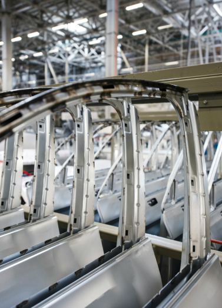
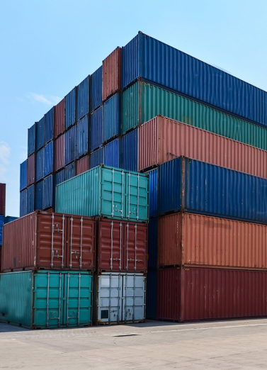

아직도 고객 클레임에 속수무책이신가요?
IoT 기반 실시간 화물 모니터링으로
온·습도, 도어 개폐 여부 등에 대한 화물의 상태를 실시간으로 모니터링하세요.
화물 위치 및 상태는 한눈에 확인되고,
한 곳에서 관리되어야 합니다
육상부터 해상까지 한눈에 보이는 내 화물의 위치
해상에서의 AIS를 통한 실시간 화물 추적과 육상에서의
IoT 기반추적 기술을 사용하여, 플랫폼 내에서 컨테이너 단위로
모든 End-to-End 구간의 위치를 한눈에 파악할 수 있습니다.
공급망에서 일어나는 모든 이벤트를
실시간으로 모니터링
IoT 센서를 통한 온·습도, 도어 개폐 등
다양한 변수를 모니터링할 수 있습니다.
예상치 못한 변수 발생 시 신속한 대응을 위한
알림 서비스를 제공하여, 화물의 품질과 보안을 향상시킬 수 있습니다.
한눈에 보이는 지도에서
보유 자산 및이동 현황 확인
화물 이동 현황부터 얼마나 화물을 보유하고 있는지
지도를 통해서 한눈에 확인할 수 있습니다.
보유 자산 및 이동 현황 파악으로 물류 계획 수립이 쉬워집니다.
독보적인 기술력에 제품력을 더했습니다.
* 해당 IoT 장비는 RoHs, WEEE, UN38.3 등 국제 표준에 부합하여 해상 및 육상 운송에 있어 안전성이 검증되었습니다.
IoT CARGO MONITORING
다양한 비즈니스 환경에서
IoT 기반 실시간 화물 모니터링을 적용하세요
-

자동차 및 전자부품 고가의 자동차 및 전자 부품의 배송 지연, 화물 손상 이슈를 최소화하기 위한 즉각적인 조치를 취할 수 있습니다.
-
식품 및 농수산물 과일, 채소, 고기, 해물 등 온·습도에 민감한 모든 운송 중인 화물의 상태와 위치를 실시간으로 모니터링하고, 품질 저하에 따른 손실과 비용을 최소화합니다.
-
 고가품 운송 중인 고가의 화물의 제품 상태를 실시간으로 모니터링하여 화물 도난, 배송 지연, 손상 이슈를 최소화할 수 있습니다.
고가품 운송 중인 고가의 화물의 제품 상태를 실시간으로 모니터링하여 화물 도난, 배송 지연, 손상 이슈를 최소화할 수 있습니다. -

선사 및 물류사 컨테이너 자산 관리가 필요한 선사 및 물류사는 공급망 가시성과 통제력을 확보하여 적절한 물류 프로세스를 수립할 수 있습니다.
물류 공급망의 디지털 혁신
End-to-End 실시간 모니터링
최적의 모니터링 환경을 구축하였습니다
기존 IoT 기반 모니터링은 해상 구간에서 GPS 정보 미수신으로 위치 파악이 어렵고,
육상 구간에서만 확인 가능한 제한된 시스템이었으며,
별도의 선사 웹사이트에서 이벤트를 확인해야 하는 비효율적인 운영으로,
신속한 대응이 어려워 물류 차질 등 경제적인 문제가 발생하고 있습니다.
씨벤티지는 이를 해결하기 위해 IoT 장비와 통합하여 해상과 육상 구간을
하나의 인터페이스에서 실시간으로 확인할 수 있는
최적의 모니터링 환경을 제공하게 되었습니다.